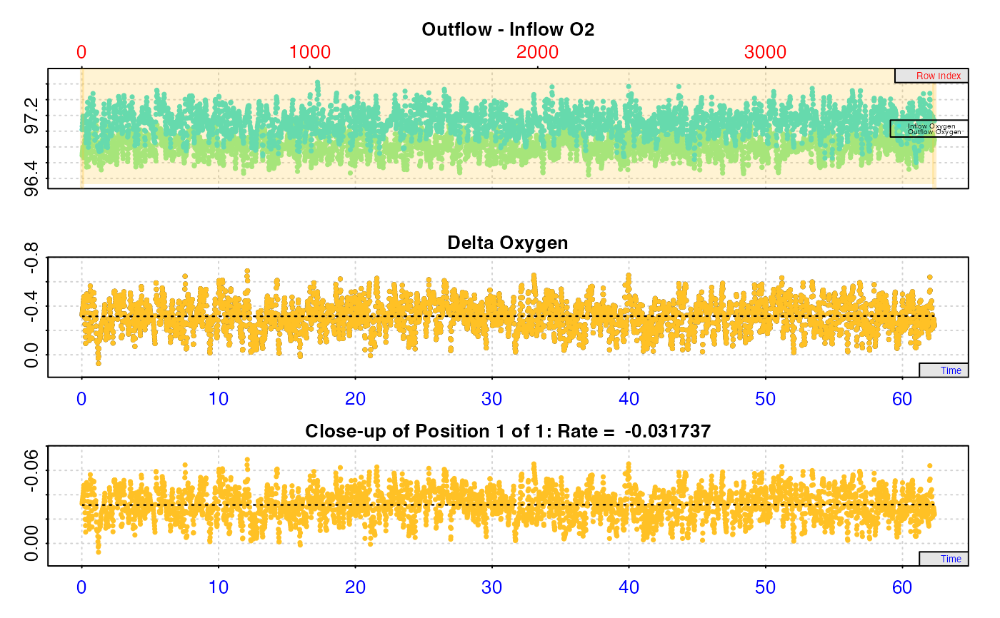
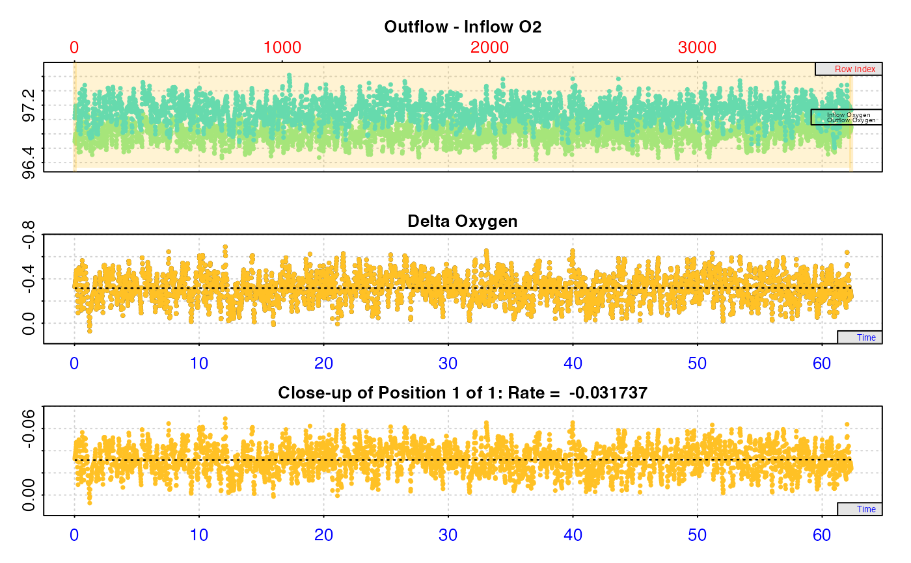

Adjust rates in flowthrough respirometry to account for background respiration or oxygen flux.
Source:R/adjust_rate.ft.R
adjust_rate.ft.RdThe adjust_rate.ft function adjusts an oxygen uptake or production rate
(for example, as determined in calc_rate.ft()) for background oxygen use
by microbial organisms, or other removal or input of oxygen during
flowthrough respirometry experiments. The function accepts numeric values,
as well as calc_rate.ft objects. Numeric x and by inputs should be
rates calculated as the oxygen delta * flowrate. Units will be specified
in convert_rate.ft() when rates are converted to specific output units.
adjust_rate.ft(x, by)Arguments
- x
numeric. A single numeric value, numeric vector, or object of class
calc_rate.ft. This is the experimental rate value(s) to be adjusted.- by
numeric. A numeric value, numeric vector, or object of class
calc_rate.ft. This contains the background rate used to perform the adjustment tox. If the vector orcalc_rate.ftobject contains multiple rates, they will be averaged to produce a single adjustment value.
Value
Output: If the x input is a calc_rate.ft object, the output
will be identical in structure, but of class adjust_rate.ft and
containing the additional elements $adjustment and $rate.adjusted, with
these also added to $summary metadata.
If x is a numeric value or vector, the output is a list object of class
adjust_rate.ft containing four elements: a $summary table, $rate,
$adjustment, and $rate.adjusted.
For all outputs, the $rate.adjusted element will be the one converted
when the object is passed to convert_rate.ft.
Details
adjust_rate.ft allows the rate, or multiple rates, in x to be adjusted by
the background rate in by. There are several ways of determining the
background rate, or performing background corrections depending on the setup
of the experiment.
For experiments in which an empty "blank" experiment has been run, and the
background rate generally does not change over the course of the experiment
(that is, the oxygen delta between inflow and outflow concentrations remains
consistent), it is recommended the rate be determined and saved via the
inspect.ft() and calc_rate.ft() functions and then entered as the
by input as either a value or the saved calc_rate.ft object. In this
case, the $rate element of the calc_rate.ft object is used to adjust all
rates in x. If there are multiple background rates in $rate, the mean
value is used. In this way, a single blank experiment can be applied to
several specimen experiments. Alternatively, the rate from several blank
experiments can be averaged to provide a single adjustment value, and this
entered via by as a numeric value.
For experiments in which an empty "blank" experiment has been run alongside
actual experiments in parallel, and background rate may increase or decrease
over time (or there may be other variations for example in the inflow oxygen
concentrations), it is recommended you NOT use this function. Instead, the
paired blank oxygen concentration data should be used in inspect.ft as
the in.oxy input. In this way, the calculated specimen delta oxygen values
take account of whatever background or other variation in oxygen is occurring
in the blank chamber with respect to time. See examples in the vignettes on
the website.
For adjustments, all rates in x, whether entered as values or as a
calc_rate.ft object, are adjusted by subtracting the mean of all background
rates in by.
Note: take special care with the sign of the rate used for adjustments.
In respR oxygen uptake rates are negative, as they represent a negative
slope of oxygen against time. Background rates will normally also be a
negative value (though not always). See Examples.
S3 Generic Functions
Saved output objects can be used in the generic S3 functions print(),
summary(), and mean().
print(): prints a single result, by default the first adjusted rate. Others can be printed by passing theposinput. e.g.print(x, pos = 2). Seehelp("print.adjust_rate.ft").summary(): prints summary table of all results and metadata, or those specified by theposinput. e.g.summary(x, pos = 1:5). The summary can be exported as a separate dataframe by passingexport = TRUE. Seehelp("summary.adjust_rate.ft").mean(): calculates the mean of all adjusted rates, or those specified by theposinput. e.g.mean(x, pos = 1:5)The mean can be exported as a separate value by passingexport = TRUE. Seehelp("mean.adjust_rate.ft").
More
For additional help, documentation, vignettes, and more visit the respR
website at https://januarharianto.github.io/respR/
Examples
# Note that oxygen uptake rates are negative in respR
# since they represent a decrease in dissolved oxygen
# and negative slope. Typically both specimen rate and
# background rate values are negative.
# ----------------------------------------------------
# Simple background respiration correction to a single
# rate.
# Note, 'x' and 'by' should both be rates calculated as
# the delta oxygen value, the difference between inflow
# and outflow oxygen, multiplied by the flowrate.
# This is (-0.98) - (-0.04) = -0.94
adjust_rate.ft(x = -0.98, by = -0.04)
#> adjust_rate.ft: Rate adjustments applied. Use print() or summary() on output for more info.
#>
#> # print.adjust_rate.ft # ----------------
#> NOTE: Consider the sign of the adjustment value when adjusting the rate.
#>
#> Rank 1 of 1 adjusted rate(s):
#> Rate : -0.98
#> Adjustment : -0.04
#> Adjusted Rate : -0.94
#>
#> To see full results use summary().
#> -----------------------------------------
# ----------------------------------------------------
# Mean background adjustment to a single rate.
adjust_rate.ft(x = -0.98, by = c(-0.04, -0.05, -0.06))
#> adjust_rate.ft: the 'by' input contains multiple background rates. The mean value will be used to perform adjustments.
#> adjust_rate.ft: Rate adjustments applied. Use print() or summary() on output for more info.
#>
#> # print.adjust_rate.ft # ----------------
#> NOTE: Consider the sign of the adjustment value when adjusting the rate.
#>
#> Rank 1 of 1 adjusted rate(s):
#> Rate : -0.98
#> Adjustment : -0.05
#> Adjusted Rate : -0.93
#>
#> To see full results use summary().
#> -----------------------------------------
# ----------------------------------------------------
# Mean background adjustment to multiple rates.
out <- adjust_rate.ft(x = c(-0.98, -0.87, -0.91),
by = c(-0.04, -0.05, -0.06))
#> adjust_rate.ft: the 'by' input contains multiple background rates. The mean value will be used to perform adjustments.
#> adjust_rate.ft: The 'x' input contains multiple rates. Each will be adjusted by the same value determined via 'by'.
#> adjust_rate.ft: Rate adjustments applied. Use print() or summary() on output for more info.
summary(out)
#>
#> # summary.adjust_rate.ft # --------------
#> Summary of all rate results:
#>
#> rank rate adjustment rate.adjusted
#> 1: 1 -0.98 -0.05 -0.93
#> 2: 2 -0.87 -0.05 -0.82
#> 3: 3 -0.91 -0.05 -0.86
#> -----------------------------------------
# ----------------------------------------------------
# Adjustment using calc_rate.ft objects
# Specimen rate
sp_rate <- flowthrough_mult.rd %>%
inspect.ft(time = 1, out.oxy = 2, in.oxy = 6) %>%
calc_rate.ft(from = 30, flowrate = 0.1)
#> Warning: inspect.ft: Time values are not evenly-spaced (numerically).
#> inspect.ft: Data issues detected. For more information use print().
#>
#> # print.inspect.ft # --------------------
#> num.time oxy.out.1 oxy.in.1
#> numeric pass pass pass
#> Inf/-Inf pass pass pass
#> NA/NaN pass pass pass
#> sequential pass - -
#> duplicated pass - -
#> evenly-spaced WARN - -
#>
#> Uneven Time data locations (first 20 shown) in column: num.time
#> [1] 1 2 3 4 5 6 7 8 9 10 11 12 13 14 15 16 17 18 19 20
#> Minimum and Maximum intervals in uneven Time data:
#> [1] 0.01 0.02
#> -----------------------------------------
#> calc_rate.ft: Calculating rate from 'inspect.ft' object.
#> calc_rate.ft: 'to' input NULL. Applying default 'to' of last time value.
# Background rate
bg_rate <- flowthrough_mult.rd %>%
inspect.ft(time = 1, out.oxy = 5, in.oxy = 9) %>%
calc_rate.ft(flowrate = 0.1)
#> Warning: inspect.ft: Time values are not evenly-spaced (numerically).
#> inspect.ft: Data issues detected. For more information use print().
#>
#> # print.inspect.ft # --------------------
#> num.time oxy.out.blank oxy.in.blank
#> numeric pass pass pass
#> Inf/-Inf pass pass pass
#> NA/NaN pass pass pass
#> sequential pass - -
#> duplicated pass - -
#> evenly-spaced WARN - -
#>
#> Uneven Time data locations (first 20 shown) in column: num.time
#> [1] 1 2 3 4 5 6 7 8 9 10 11 12 13 14 15 16 17 18 19 20
#> Minimum and Maximum intervals in uneven Time data:
#> [1] 0.01 0.02
#> -----------------------------------------
#> calc_rate.ft: Calculating rate from 'inspect.ft' object.
#> calc_rate.ft: 'from' and 'to' inputs NULL. Applying default of calculating rate from entire dataset.
 
# Perform adjustment
adj_rate <- adjust_rate.ft(sp_rate, by = bg_rate)
#> adjust_rate.ft: Rate adjustments applied. Use print() or summary() on output for more info.
print(adj_rate)
#>
#> # print.adjust_rate.ft # ----------------
#> NOTE: Consider the sign of the adjustment value when adjusting the rate.
#>
#> Rank 1 of 1 adjusted rate(s):
#> Rate : -0.7491393
#> Adjustment : -0.03173658
#> Adjusted Rate : -0.7174027
#>
#> To see full results use summary().
#> -----------------------------------------
summary(adj_rate)
#>
#> # summary.adjust_rate.ft # --------------
#> Summary of all rate results:
#>
#> rep rank intercept_b0 slope_b1 rsq row endrow time endtime oxy endoxy delta_mean flowrate rate adjustment rate.adjusted
#> 1: NA 1 -7.850319 0.007774567 0.1241319 1800 3740 30 62.33 -7.386095 -7.528274 -7.491393 0.1 -0.7491393 -0.03173658 -0.7174027
#> -----------------------------------------
# ----------------------------------------------------

# Perform adjustment
adj_rate <- adjust_rate.ft(sp_rate, by = bg_rate)
#> adjust_rate.ft: Rate adjustments applied. Use print() or summary() on output for more info.
print(adj_rate)
#>
#> # print.adjust_rate.ft # ----------------
#> NOTE: Consider the sign of the adjustment value when adjusting the rate.
#>
#> Rank 1 of 1 adjusted rate(s):
#> Rate : -0.7491393
#> Adjustment : -0.03173658
#> Adjusted Rate : -0.7174027
#>
#> To see full results use summary().
#> -----------------------------------------
summary(adj_rate)
#>
#> # summary.adjust_rate.ft # --------------
#> Summary of all rate results:
#>
#> rep rank intercept_b0 slope_b1 rsq row endrow time endtime oxy endoxy delta_mean flowrate rate adjustment rate.adjusted
#> 1: NA 1 -7.850319 0.007774567 0.1241319 1800 3740 30 62.33 -7.386095 -7.528274 -7.491393 0.1 -0.7491393 -0.03173658 -0.7174027
#> -----------------------------------------
# ----------------------------------------------------